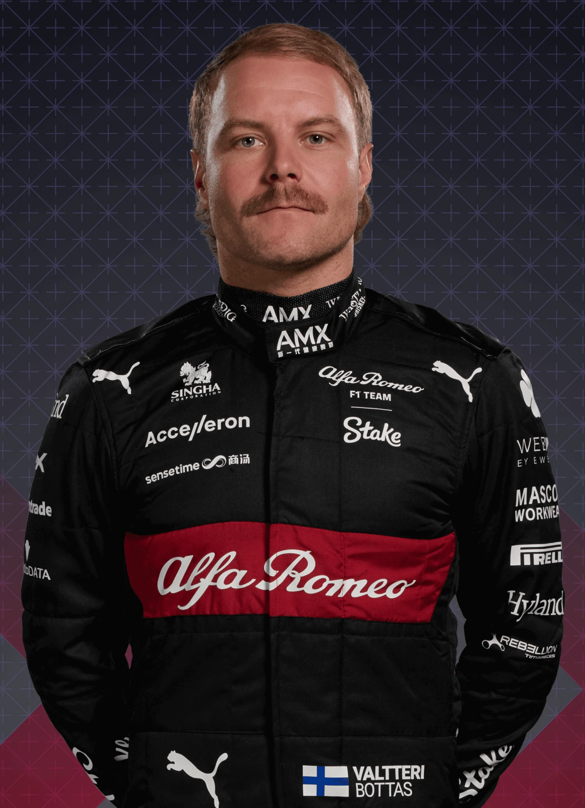
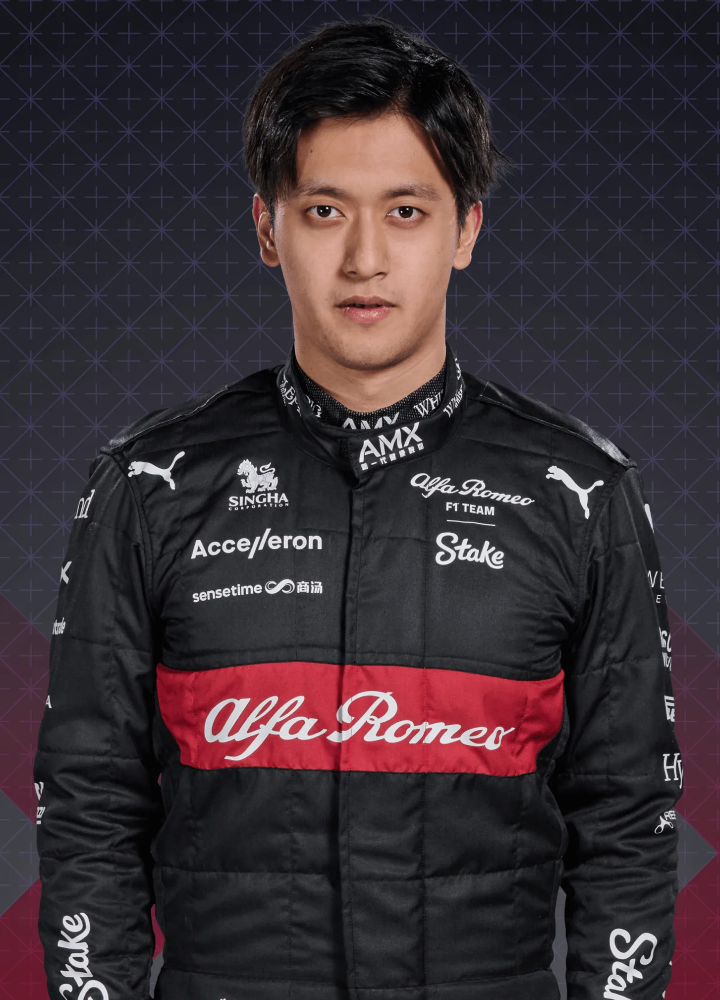

Alfa Romeo F1 Tim
|

77 Valtteri Bottas |

24 Zhou Guanyu |
|---|
The name Alfa Romeo boasts Formula 1 connections dating back to the championship’s inception in 1950. Fast forward to the 21st century and Italian flare combines with Swiss sensibilities in a new era for the team formerly known as Sauber. Having enjoyed considerable success in world sportscars, where he helped nurture the emerging talents of future F1 stars Michael Schumacher and Heinz-Harald Frentzen, Peter Sauber guided his eponymous squad into F1 in 1993. The team has since established itself as a mainstay of the grid, becoming race winners under BMW’s brief ownership, and developing a well-earned reputation not only for producing competitive cars, but also for developing young drivers.
Move up three places in the standings, with Valtteri Bottas relishing his team leader role and rookie Zhou Guanyu more than earning his place. Make the headlines late season with news that the team will become the Audi works squad from 2026.
Fall to ninth in the table behind Williams, with 10 of their 13 points scored by former champion Kimi Raikkonen, who calls time on his F1 career at the end of the season. Prepare all-new line-up of ex-Mercedes racer Valtteri Bottas and Chinese newcomer Zhou Guanyu for 2022.
Another season of infrequent highs – both cars scoring points at their home race of Imola, and both making Q3 in Turkey – again ends with P8 overall, Kimi Raikkonen and Antonio Giovinazzi amassing just eight points between them.
Progress slows, as the C38 proves frustratingly inconsistent, even with the experienced Kimi Raikkonen at the wheel. Nevertheless retain P8 in the standings, 22 of their 57 points coming at the season’s eventful penultimate round in Brazil.